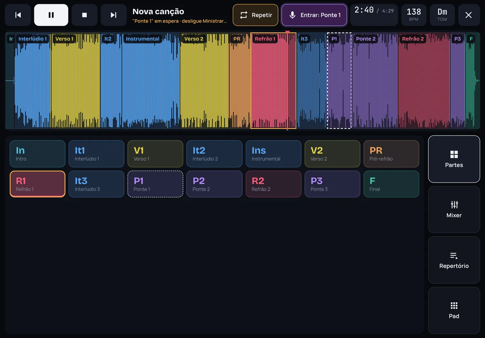
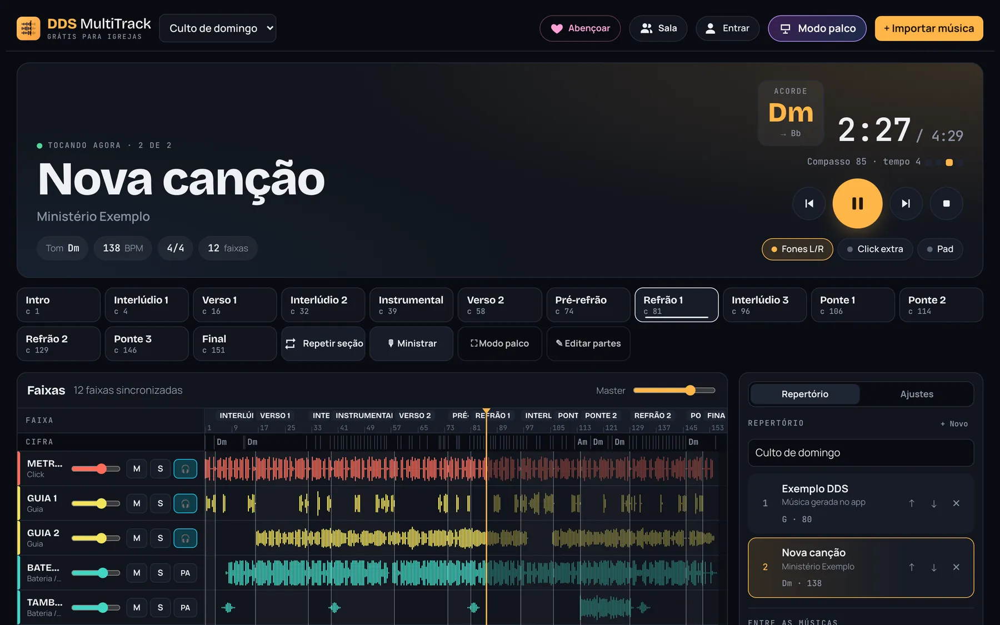
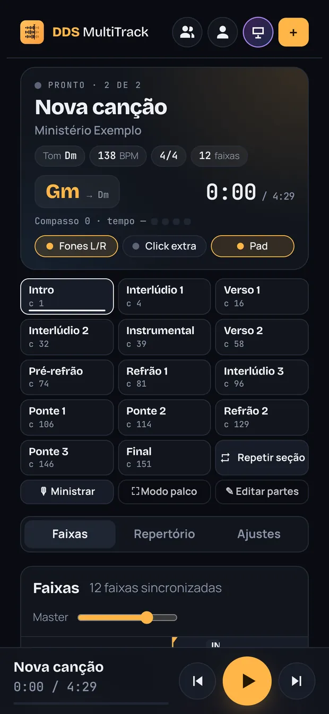
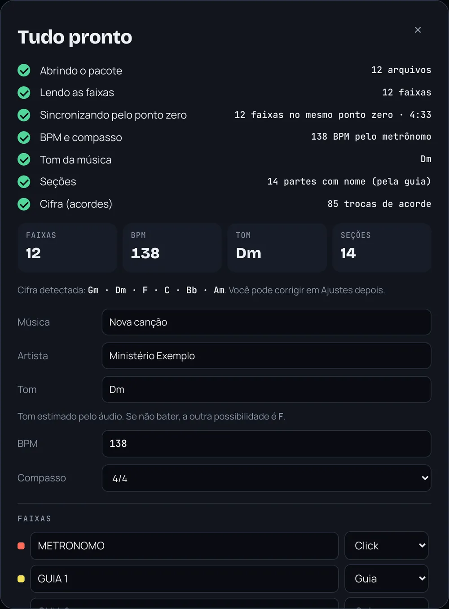
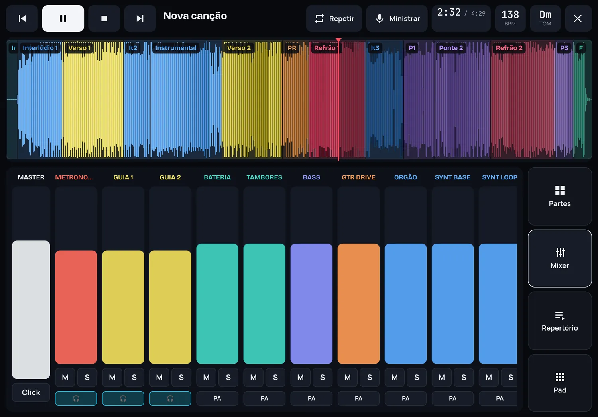
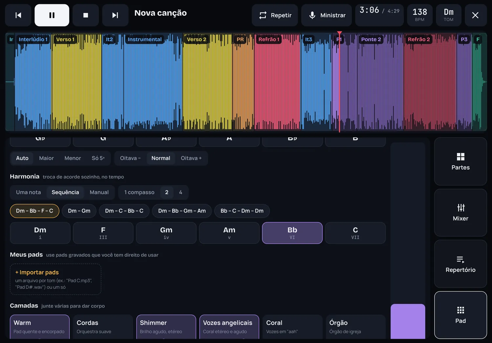

Partes
Volte no refrão quando o Espírito pedir.
Toque na parte e ela entra quando a atual terminar, sem atravessar o tempo. Tocou errado? Toque de novo e cancela. Para segurar um trecho, use Repetir.

Importe o pacote de multitrack ou só o MP3 da música. O DDS MultiTrack encontra o BPM, o tom, as partes e a cifra sozinho. No culto, você troca de parte no tempo, ministra com o pad por baixo e a equipe acompanha pelo celular.
Grátis para igrejas. Sem cadastro para começar. Funciona no celular, no tablet e no computador.

Verso
O VS completa a banda nas partes que faltam e deixa todo mundo no mesmo tempo, do ensaio ao culto.

Pré-refrão
Envie o .zip do multitrack, as faixas soltas ou só o MP3. Pacotes grandes também passam no celular.
Alinha as faixas no mesmo ponto zero e descobre BPM, tom, partes com nome e a cifra que vai aparecendo enquanto toca.
Monte o repertório, abra o Modo palco e conduza a música com toques grandes, feitos para a pressa do altar.

Refrão
Partes
Toque na parte e ela entra quando a atual terminar, sem atravessar o tempo. Tocou errado? Toque de novo e cancela. Para segurar um trecho, use Repetir.

Modo palco
Mapa da música colorido, botões grandes, mixer com faders de verdade e o repertório na lateral. No celular deitado ou no tablet.

Pad
Pad no tom da música com camadas para dar corpo: vozes angelicais, cordas, shimmer, órgão. A harmonia pode andar sozinha no tempo ou seguir os acordes que você toca. Também dá para importar os seus próprios pads.

Sala ao vivo
O líder cria a sala e passa um código. Cada músico acompanha no celular: a parte atual, a próxima, o acorde e o compasso, no mesmo instante.
Ponte
Ao ligar Ministrar, a banda sai e fica só o pad, enquanto a música segue no tempo, em silêncio. Você fala, ora, conduz. Escolha a parte de volta e, quando desligar, a banda entra nela no compasso certo.
Banda tocando o Verso 2Experimente: toque em Ministrar.
Final
Feito para os ministérios que não têm acesso a ferramentas caras de VS. Abra no navegador, importe sua primeira música e toque hoje mesmo.
Não. Abra ddsinovacao.com.br/vs no navegador e toque em Acessar o sistema. No iPhone ou Android, dá para adicionar à tela de início e usar como um aplicativo.
Depois que a música foi importada, ela fica guardada no aparelho e toca sem internet. A internet só é usada para sincronizar o repertório e para a Sala ao vivo.
Ligue Fones L/R no app e use um cabo P2 estéreo para dois P10. O lado esquerdo vai para o retorno ou in-ear dos músicos (click e guia) e o direito vai para o público. Em cada faixa você escolhe para qual lado ela vai.
Ainda não. Com o MP3, o app encontra BPM, tom, partes e cifra e toca a música inteira. Para ter cada instrumento separado, importe o pacote de multitrack com as faixas.
Use os pacotes e pads que você tem direito de usar: comprados, liberados pelo artista ou gravados pela própria igreja. O app não distribui músicas, cada igreja importa as suas.
Para tocar, não. A conta, com e-mail e senha, serve para sincronizar o repertório entre aparelhos e para entrar na Sala do ministério.